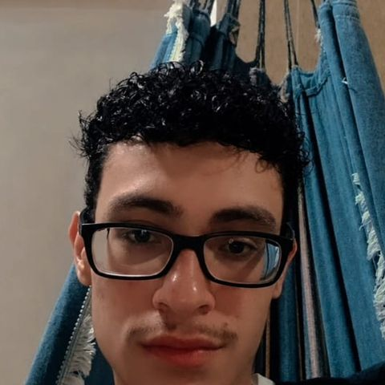
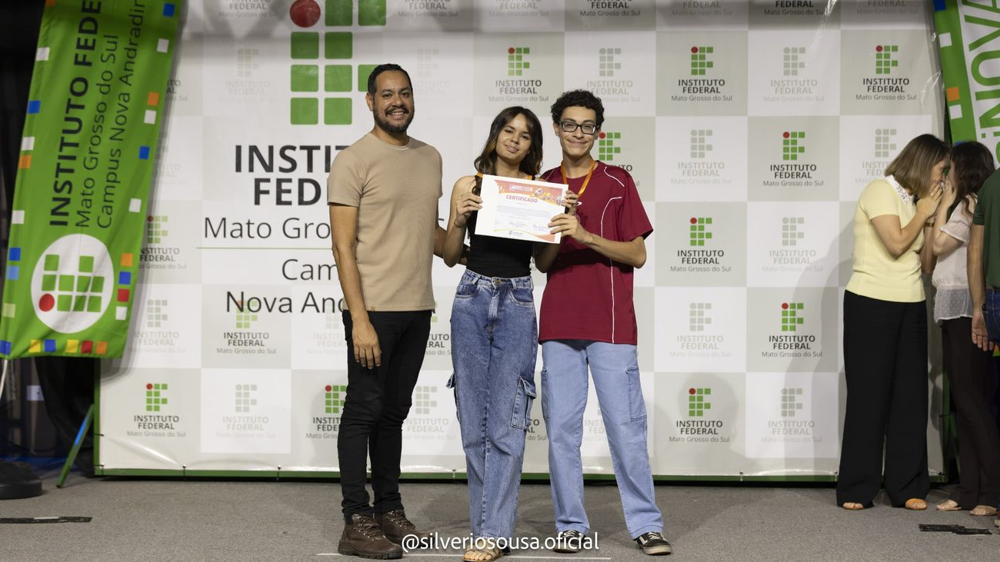
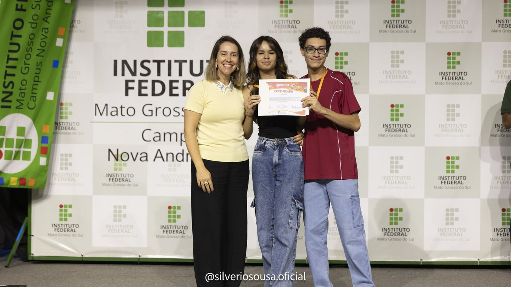
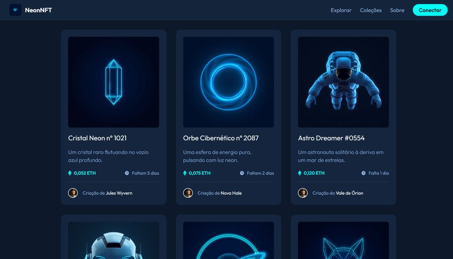
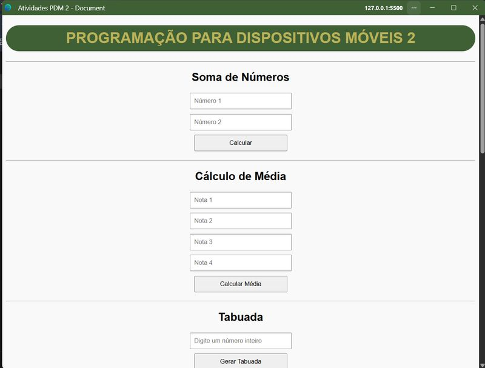

TCC sobre o ICAS
Trabalho de Conclusão de Curso sobre a atuação do Instituto de Conservação de Animais Silvestres na proteção do Cerrado e do Pantanal. Escrito em dupla, com 24 páginas.
Ler o TCC (PDF)Olá, eu sou o
Estudante do Técnico em Informática Integrado ao Ensino Médio no IFMS, Campus Nova Andradina.
clique no sapo

Sou o Jean, estudante do curso Técnico em Informática Integrado ao Ensino Médio no Instituto Federal de Mato Grosso do Sul (IFMS), Campus Nova Andradina. Estou me formando em 2026.
Conheço JavaScript, HTML, CSS e manutenção de computadores. Neste ano, apresentei meu TCC na Fecinova e conquistei o 2º lugar na categoria de trabalhos multidisciplinares.
Trabalho de Conclusão de Curso sobre a atuação do Instituto de Conservação de Animais Silvestres na proteção do Cerrado e do Pantanal. Escrito em dupla, com 24 páginas.
Ler o TCC (PDF)Atividades em JavaScript: soma de números, cálculo de média e tabuada, em uma página responsiva.
Atividades de versionamento com branches e de middleware, além do trabalho da biblioteca, todas em repositórios no GitHub.
Ver repositóriosFormação integrada ao ensino médio, com disciplinas de programação, desenvolvimento web e manutenção de computadores.
Pesquisa sobre como o ICAS reduz os atropelamentos de fauna nas rodovias de Mato Grosso do Sul, com projetos como Bandeiras e Rodovias e Tatu-Canastra.
Minha participação: coautor do TCC e do banner apresentado na Fecinova, em dupla com Larissa Prado Araldo e orientação da professora Débora Macorini.
Vitrine de NFTs com tema neon, com cards animados, cabeçalho com menu responsivo e lista de coleções.
Minha participação: desenvolvimento em grupo no Desafio 1.0, usando HTML e CSS.
Página com três mini-aplicativos em JavaScript: soma, média de quatro notas e tabuada.
Minha participação: desenvolvimento individual.
🏅 Fecinova 2026: 2º lugar na categoria de trabalhos multidisciplinares.
A Fecinova é a Feira de Ciência e Tecnologia de Nova Andradina, organizada pelo IFMS. Apresentei o TCC sobre o ICAS em formato de banner científico.



